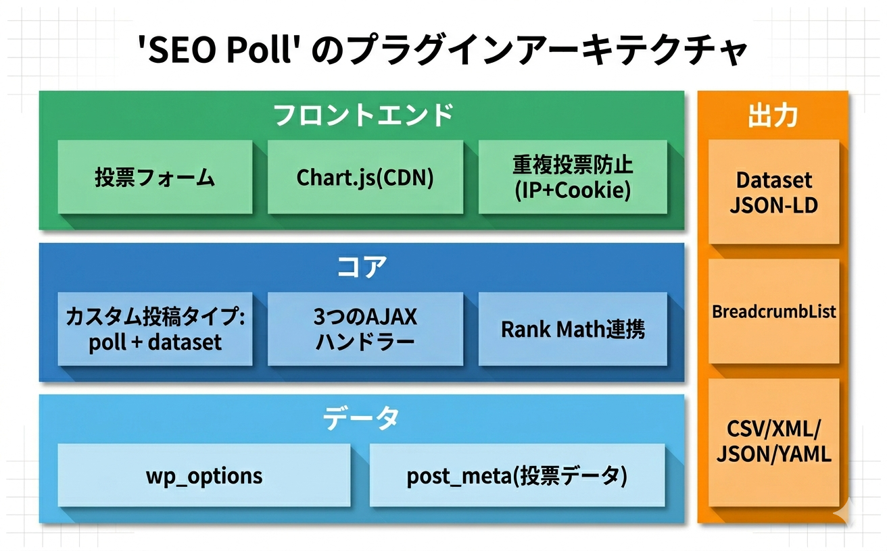

トラブルシューティング
よくある問題とその解決方法をまとめています。
よくある問題と解決策
アンケートが表示されない
原因: ショートコードのIDが正しくないか、アンケートが公開されていない可能性があります。
ショートコードの id パラメータが正しいアンケートの投稿IDか確認する
アンケートのステータスが「公開済み」になっているか確認する
ブラウザのコンソール（F12キー）でJavaScriptエラーがないか確認する
アンケートの投稿IDは管理画面「アンケート」一覧でマウスオーバーすると確認できます。
グラフが表示されない
原因: Chart.jsライブラリの読み込み失敗が考えられます。
ブラウザのコンソールでChart.jsの読み込みエラーがないか確認する
CDN（jsdelivr.net）へのアクセスが遮断されていないか確認する
他のプラグインやテーマがChart.jsと競合していないか確認する
Chart.jsは外部CDN（jsdelivr.net）から読み込まれます。社内ネットワーク等でCDNへのアクセスが制限されている場合、グラフは表示できません。
投票できない（重複投票エラー）
原因: 同一IPアドレスまたはCookieにより、既に投票済みと判定されています。
ブラウザのCookieをクリアして再度投票を試みる
共有IPアドレス環境（社内LAN等）の場合、他のユーザーが既に投票している可能性がある
重複投票防止はIPアドレスとCookieの組み合わせで実現しています。VPNやプロキシ環境では正確に動作しない場合があります。
JSON-LDが出力されない
原因: アンケートページ以外のページではJSON-LDは出力されません。
アンケートのカスタム投稿タイプページ、またはショートコードを含むページのソースコードを確認する
ページのHTMLソース内で <script type="application/ld+json"> を検索する
Google リッチリザルトテストでJSON-LDの検証を行う
データセットファイルが生成されない
原因: アンケートの投票データがないか、ファイル書き込み権限の問題です。
アンケートに1件以上の投票があることを確認する
データセットの保存先ディレクトリに書き込み権限があるか確認する
サーバーのディスク容量が不足していないか確認する
動作要件
| 項目 | 要件 |
|---|---|
| WordPress | 6.0 以上 |
| PHP | 7.4 以上 |
| ブラウザ | Chrome, Firefox, Safari, Edge（最新版） |
| 外部ライブラリ | Chart.js（CDN: jsdelivr.net から自動読み込み） |
| 権限 | 管理者（アンケート管理）、閲覧者（投票・閲覧） |
技術仕様
- データ保存: wp_options (
kashiwazaki_poll_settings等) - カスタム投稿タイプ: poll + dataset
- カスタムテーブル: なし
- 外部通信: Chart.js CDN (jsdelivr.net)
- Cron: なし
- メール: なし
- AJAXハンドラー: 3個
- フロントエンド出力: CSS 20KB、JS 32KB、JSON-LD (Dataset, BreadcrumbList)、DC.type metaタグ
- ショートコード:
[tk_poll id=123] - 重複投票防止: IP + Cookie
- データセット出力: CSV / XML / JSON / YAML
- セキュリティ: nonce検証、capability チェック
